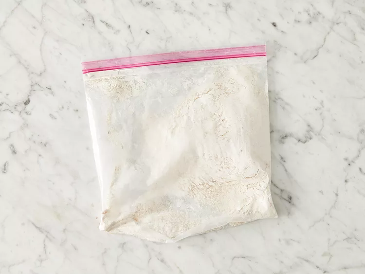
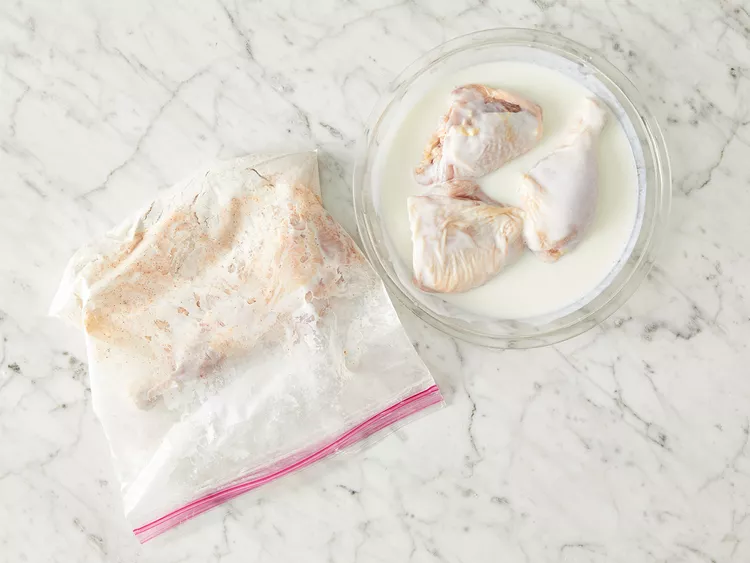
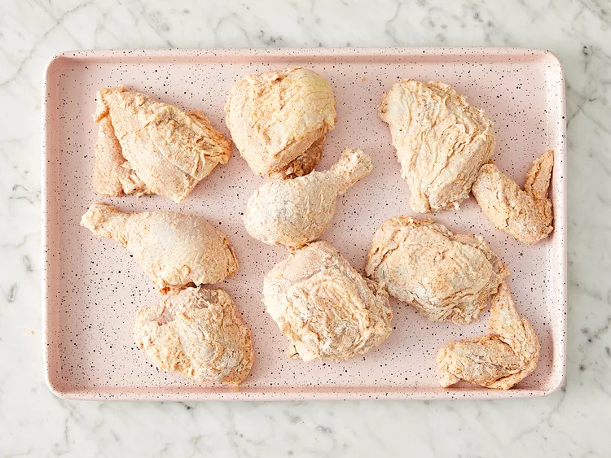
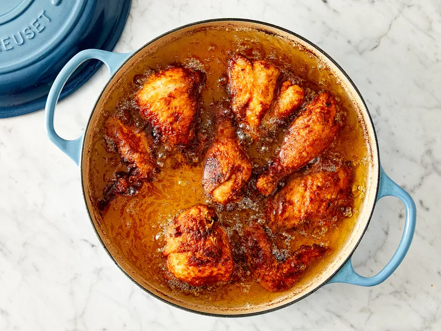

CRISPY FRIED CHICKEN

This is the only crispy fried chicken recipe you'll ever need. Why? It combines all the tried-and-true tricks to ensure the juiciest, most flavorful, crispiest chicken every time.
What Makes This Fried Chicken So Crispy?
There are a few reasons this crispy fried chicken works so well:
- Allowing the buttermilk-flour mixture to come to a paste-like consistency is key to a crispiness on the outside and juiciness on the inside.
- Most fried chicken is cooked at a high temperature throughout the frying process. This one, however, only starts at a very high heat — after browning, the heat is reduced for about 30 minutes. You'll turn up the temperature again at the end, locking in that crispy texture.
- Paprika adds smoky flavor and has a low smoke point, which helps with browning the chicken.
Crispy Fried Chicken Ingredients
Here's what you'll need to make the best, crispiest fried chicken of your life:
- Chicken: Cut a four-pound whole chicken into pieces or purchase four pounds of breasts, drumsticks, wings, legs, and/or thighs at the grocery store.
- Buttermilk: Acidic buttermilk tenderizes the chicken without making it too tough. Also, it helps the flour mixture stick to the chicken.
- Flour: All-purpose flour gives the buttermilk and seasonings something to stick to, while ensuring a wonderfully crispy crust.
- Seasonings: This crispy fried chicken recipe calls for paprika (which helps with browning), salt, and pepper. You can add more spices and seasonings to taste.
- Oil: Vegetable oil is perfect for frying chicken because it has a high smoke point.
How to Store Fried Chicken
Let the fried chicken cool before storage to prevent bacteria growth. Place it in a shallow airtight container or wrap it tightly in aluminum foil, then refrigerate for up to four days. Reheat in the microwave or in the oven.
Ingredients
- 1 (4 pound) chicken, cut into pieces
- 1 cup buttermilk
- 2 cups all-purpose flour for coating
- 1 teaspoon paprika
- salt and ground black pepper to taste
- 2 quarts vegetable oil for frying
-
Skin cut up chicken pieces if you prefer.
-
- Place flour in a large plastic bag (let the amount of chicken you are cooking dictate the amount of flour you use). Season flour with paprika (which helps to brown the chicken), salt, and black pepper.

-
- Dip chicken pieces in buttermilk, then transfer, a few at a time, to the bag with flour; seal the bag and shake until well coated. Repeat with remaining chicken.

-
- Place coated chicken on a baking sheet or tray; cover with a clean dish towel or waxed paper. LET SIT UNTIL THE FLOUR IS A PASTE-LIKE CONSISTENCY. THIS IS CRUCIAL!

-
Fill a large skillet (cast iron is best) about ⅓ to ½ full with vegetable oil. Heat until VERY hot.
-
- Carefully lower as many chicken pieces into the skillet as it can hold. Fry in HOT oil on both sides until brown.

-
- Drain fried chicken on paper towels. Depending on how much chicken you have, you may have to fry in a few batches. Keep the finished chicken in a slightly warm oven while frying the rest.